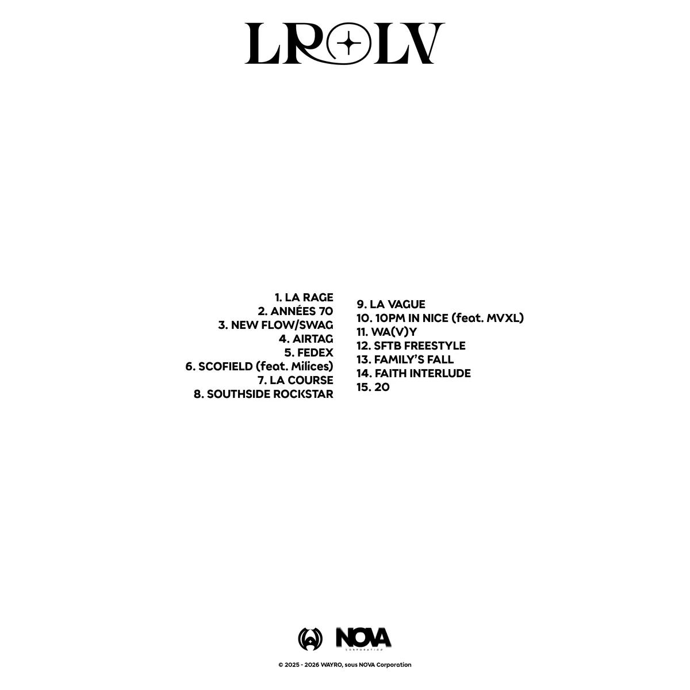
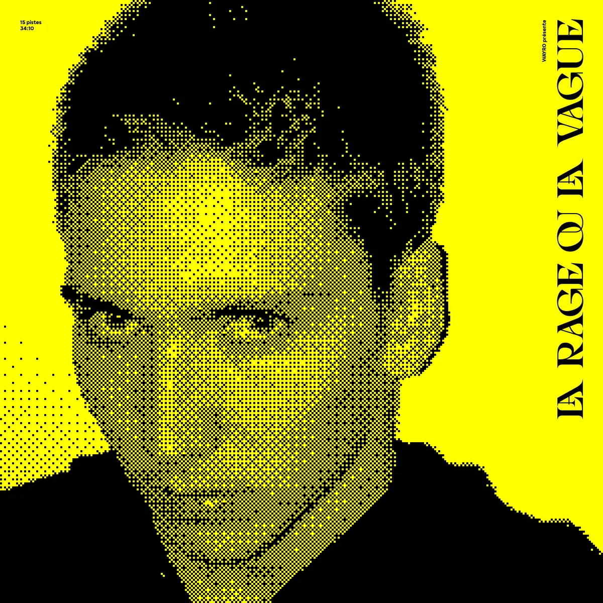
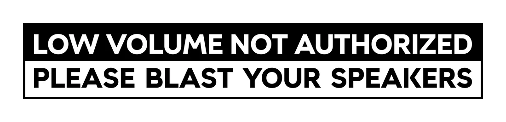
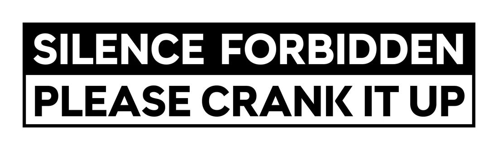
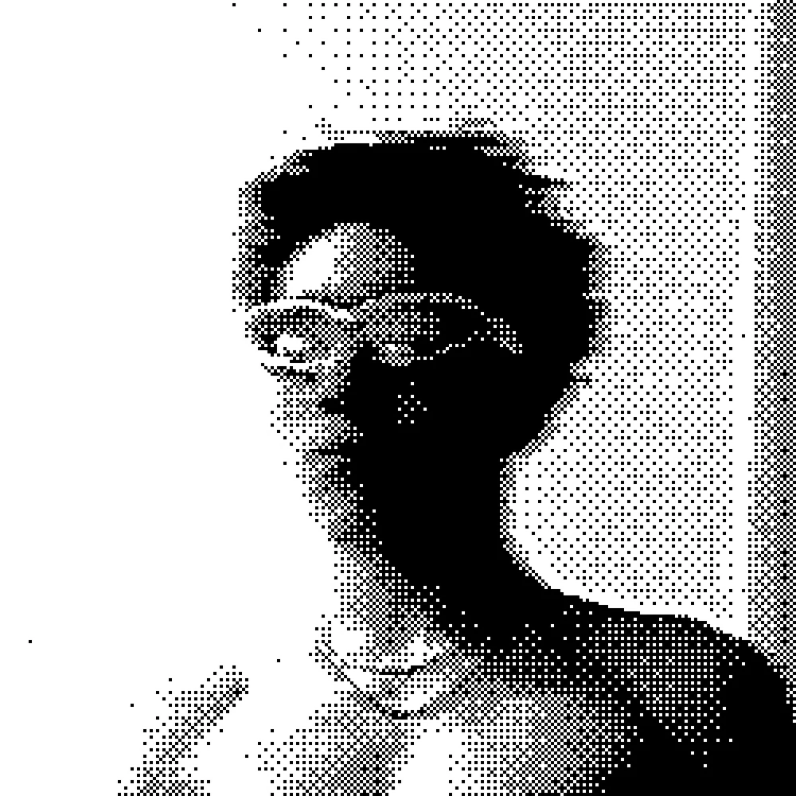
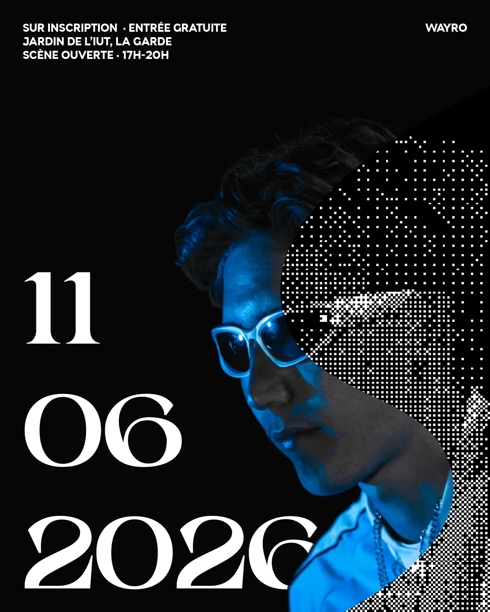

Le projet
La rage ou la vague.
Le titre est déjà un choix. Pas « et ». « Ou ». Deux forces qui s'excluent, et qu'il faut pourtant traverser. Sur Æther, j'opposais déjà une face claire et une face sombre ; ici, avec un an d'expérience en plus, j'ai poussé cette obsession du contraire jusqu'à son paroxysme.
Jusque dans la structure du disque, jusque dans le choix des couleurs, jusque dans le grain de ma voix. Si Æther racontait mes années lycée, La Rage Ou La Vague raconte mes études supérieures — et la direction artistique porte tout ça, du premier pixel au dernier son.
L'album
Un disque
coupé en deux.
Quinze titres, trente-quatre minutes, et une ligne de fracture au milieu. La première moitié, c'est La Rage : des morceaux énervés, agressifs, taillés dans des sonorités rage et trap. La seconde, c'est La Vague : plus douce, plus amoureuse, plus personnelle. Deux humeurs, deux écritures, un seul disque qui refuse de choisir.
Côté Rage — LA RAGE · ANNÉES 70 · NEW FLOW/SWAG · AIRTAG · FEDEX · SCOFIELD (feat. Milices) · LA COURSE · SOUTHSIDE ROCKSTAR.
Côté Vague — LA VAGUE · 10PM IN NICE (feat. MVXL) · WA(V)Y · SFTB FREESTYLE · FAMILY'S FALL · FAITH INTERLUDE · 20.

La direction artistique — I
Trois couleurs,
deux fontes.
Toute la DA tient sur trois couleurs : le noir, le blanc et un jaune pur — le plus saturé qu'un écran puisse afficher. Un choix de contraste maximal, qui tape à l'œil — un clin d'œil, aussi, au minimalisme et au choix des couleurs du Whole Lotta Red de Playboi Carti. Deux fontes, des layouts épurés à l'extrême. Et ce minimalisme ne s'arrête pas au visuel : sur une grande partie de l'album, ma voix est laissée brute, sans réverb ni délai. Rien pour se cacher.

La direction artistique — II
Le dithering,
pierre de base.
Partout, le même traitement : un dithering organisé à la matrice de Bayer, ce pixel structuré qui rappelle l'esthétique des jeux vidéo des années 90-2000. C'est la signature de tout l'univers. Et là encore, je l'ai fait passer du visuel à l'audio : chaque morceau contient du bitcrushing — un dithering sonore — jusqu'à mes deux tags, systématiquement bitcrushés, pour que l'œil et l'oreille entendent la même chose.
Le retour
Rallumer
la communication.
La campagne s'est ouverte sur une vidéo d'annonce — le premier signe de vie autour de l'album. J'y mêle le dithering à de la 3D, deux langages que j'adore faire se rencontrer. Une manière de poser l'univers avant même la première note.
Les singles
Trois portes
vers l'album.
Trois singles ont ouvert la voie avant la sortie : NEW FLOW/SWAG, LA COURSE et FEDEX — le plus énergique, qui a eu droit à son propre clip. Chacun a été teasé avec la même grammaire visuelle.
Teaser · NEW FLOW/SWAG
Teaser · LA COURSE
Les panneaux
Deux ordres,
zéro nuance.
Dans le prolongement du minimalisme, j'ai dessiné deux panneaux façon signalétique routière — directs, sans fioriture. On les retrouve un peu partout dans l'univers de l'album, jusque dans le clip de FEDEX.


Les déclinaisons
La même langue,
partout.
Stories Instagram, covers de singles, photo de profil : le système visuel se rejoue à l'identique sur chaque support. Douze stories, un jeu de covers, une identité qui ne bouge pas d'un pixel.

La première scène
Premier concert,
même univers.
Pour annoncer ma toute première scène — la scène ouverte de l'IUT à La Garde, près de Toulon — j'ai confectionné une affiche dans la même direction artistique. Mon premier concert, et déjà la volonté que tout parle le même langage, du disque à l'affiche.

Écouter
La rage ou la vague. À un moment, il faut trancher — ou apprendre à vivre avec les deux. L'album entier tient dans cette tension, du visuel jusqu'au son.